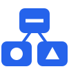

| Key | Grid view | Full-screen view | |
|---|---|---|---|
| Focused | Hovered / none | ||
| ? | Toggle this help | Toggle this help | Toggle this help |
| esc | Close panel, or demote to hovered | Clear hover, or blur filter | Back to grid, or close panel |
| / | Focus filter input | Focus filter input | — |
| ⌘F | Quick-find — jump hover to a node | Quick-find — jump hover to a node | Quick-find — navigate to a node |
| f | Fit all to view | Fit all to view | — |
| click | Focus node | Focus node | — |
| dbl-click | Open full-screen | Open full-screen | — |
| enter | Open node full-screen | Focus the hovered node | Navigate to focused card |
| ← | Open upstream panel | Hover the node on the left | Open upstream panel |
| → | Open downstream panel | Hover the node on the right | Open downstream panel |
| ↓ | Open variants panel | Hover the node below | Open variants panel |
| ↑ | Back to previous focus | Hover the node above | Open node info panel |
| space | Copy focused ID | Copy hovered ID | Copy focused or current ID |
| Inside a panel (either mode) | |||
| ↑ ↓ | Step through cards (left / right panels) | ||
| ← → | Step through cards (bottom / variants panel) | ||
| enter | Pick the focused card | ||
| same arrow | Pressing the opening arrow again commits the focused card | ||
| opposite arrow | Pressing the opposite arrow closes the panel | ||